← All interviews
The
Commoner's Response: Building Freedom from the Ground Up
| Queue title |
Commoner |
| Video |
YouTube:
POZfdI0f4TU · 1 h 43 m 42 s · published 2026-08-30 by Commoner Law
Group |
| Event |
Segment 4 of "The American Commoner: 250 Years Later," Commoner Law
Group's twelve-hour Independence Day gathering (4 July 2026) |
| Featured guest |
Daniel Mentz, Sacred Honor Educational Fellowship |
| Host |
Clint Griess, Commoner Law Group |
| Other voices |
Audience members Clayton, Sarah, Audrey and Tamara (first names
only, as given on the call) |
| Format |
Open conversation on solutions, with a short excerpt of Griess's own
"Juries" presentation. No Mentz slide deck. |
| Queue row ID |
3574e0d1-b72a-4dfc-92b5-69cb3590491a |
| Collateral |
Full transcript · video metadata · slide index |
Reader's note. This summarises what was said and
shown. The historical and legal claims are the speakers' own and were
not verified here. The closing "Claims worth checking" section lists
points to check. Mentz and Griess both teach or promote paid programs
(the Fellowship courses, the Exit & Build event), and several
segments describe them. Nothing here is legal advice.
1. Thesis in brief
After three hours on "fractures" in American society, the segment
turns to what a self-governing people can do. The
conversation maps four responses (Griess's taxonomy): stay and
fix, exit and build, withdraw
consent, hold power accountable. Mentz argues
for exit and build in combination with the Fellowship's
"lawful remedy" pathways. Clayton argues for local political
organisation and a third party. Griess argues that every exit-and-build
project must put governance, and above all the
jury principle, at its centre or it will fracture.
2. Host's framing [00:00–04:50]
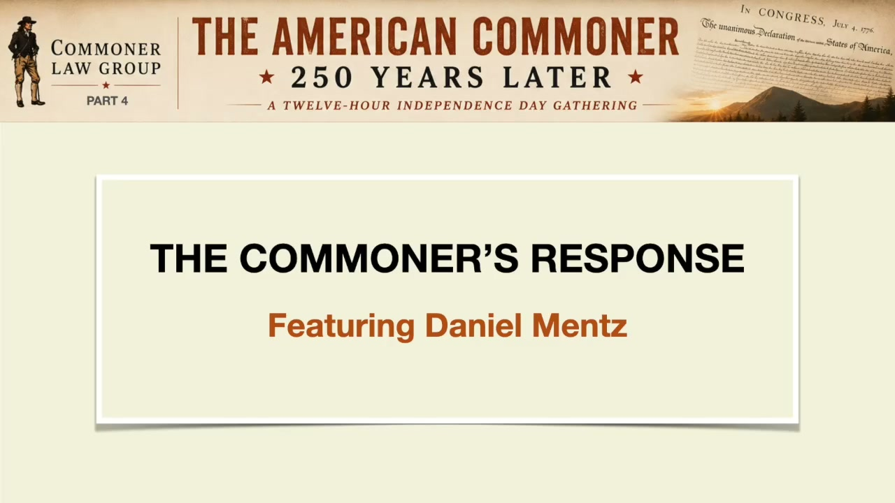
Slide 1 [00:00]: "The Commoner's Response," Featuring Daniel Mentz
(Part 4 of the Independence Day gathering).
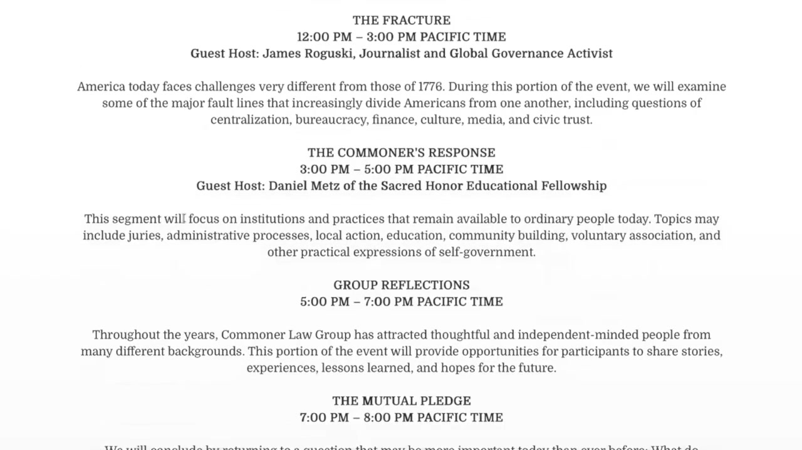
Slide 2 [00:32]: The day's schedule page: The Fracture (12:00–3:00
pm PT), The Commoner's Response (3:00–5:00 pm PT; the page spells the
guest "Metz"), Group Reflections, The Mutual Pledge.
- The morning covered the Declaration's promise and grievances; the
last three hours "got messy" with divisive topics (free speech,
presumption of innocence, due process, whether a crime needs a
victim).
- Now "get your solutions hat on." Griess names two enduring problems:
today's ordinary crises (economy, energy, food) and the permanent threat
of tyranny, from oligarchs "who can tip the scales" and
mob rule, "and somehow the oligarchs seem to be able to weaponize the
mob."
- "No one's coming to save us." The signers took the same stand 250
years ago on the premise that ordinary people can govern themselves
"without the need for a hierarchy of institution, whether it's a king or
a church or a corporation."
- Griess introduces Mentz as "a friend and brother" and notes he was
born in Germany, praising the experimental governance of northern
Germany's patchwork of principalities and co-ops.
3.
Mentz: the four pathways and the "dual system" [06:25–16:55]
- He had not prepared a presentation ("I always have slides") and
wants an open conversation. He introduces himself as National Status
& Passport director at Sacred Honor and lists the four pathways:
status correction, equity
jurisprudence ("the ancient law that overrules all other
laws"), the trifecta (trust, private church, PMA) and
land patents. "Once you combine them… you're the most
free American you can be in today's America."
- The thesis of hope. "The original organic
constitutional republic… still exists." After the Civil War "they
overlaid this fictional corporate matrix" (D.C. incorporated in 1871,
then the states as sub-corporations), but "Americans can still claim all
the rights… it provided."
- He claims an original 13th
Amendment ("properly ratified in the early 1800s") barred
lawyers and title-holders from holding office. "99% of [Congress]" are
attorneys. He cites false ratifications and blackmail "during and after
the Civil War."
- A mainstream source: Eric Foner's The Second
Founding, recommended by his colleague Troy (the National
Status liaison). Foner is, he says, "a pretty mainstream historian," and
the book says "there was the pre-Civil War and then there was the
post-Civil War America… completely separate systems."
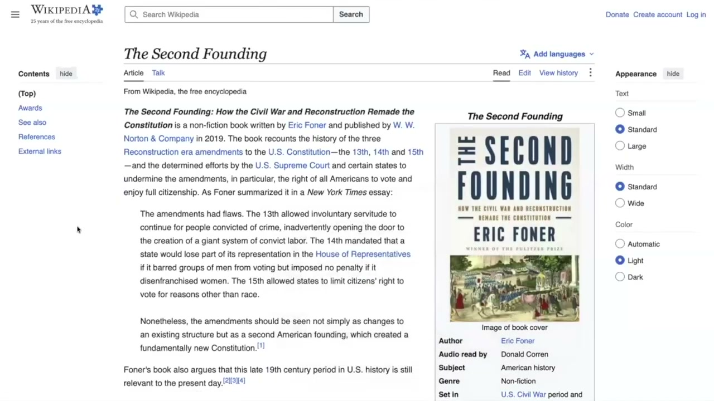
Slide 3 [14:01]:
The Wikipedia entry for Eric Foner's The Second Founding*, shown on
screen.*
- Duality everywhere. Two stamps on the Federal
Reserve Note; U.S. citizen vs. national; LLC/S-corp vs. private business
trust; real estate vs. land patent. The tax code, he says, shows "this
dualistic" structure "if you know how to decipher their legalese."
- He dislikes "patriot lawfare" as a term: it "hints at being
belligerent." The remedies can be used "peacefully and honorably."
4. Consent, anger and
the "psyop" [16:55–32:00]
- Why do contracts keep asking "Are you a U.S. citizen? Are you a
resident?" Because "they know you have a choice," so
volunteering without understanding the terms "ensnares"
you. "Karmically you're doing it to yourself, and the architects… have
clean karmic hands." (The same argument appeared in interviews 01 and
02.)
- Anger. Waking up "can trigger anger… all of the
directors in our fellowship went through it… you cannot suppress the
anger… scream into a pillow, let it out," and then move to solutions.
Other remedy groups "come from a place of anger… we got to argue and
fight the system."
- Don't argue. "As soon as you start defending
yourself, now you're acting guilty… the whole point of a judge is to
administer a controversy, so if you don't give them any controversy
there's nothing left to administer." Public school mock trials "program"
people to argue and defend. Asking questions back is "stepping into
being a Jedi."
- The wider frame. Life from birth to death is "a
massive psychological operation… a war on consciousness." Distractions
(Supreme Court, Trump, international affairs) "siphon off your life
force energy." AI can be "a great tool" or a weapon.
- Griess's reaction: "that was not a rabbit hole, that was a freaking
treatise." Any solution "has to come with an accurate map" of
reality.
Griess on Independence Day [24:47–27:15]. For years
he had mixed feelings ("did we really get rid of those Brits?") and
wanted to avoid the 250th anniversary's "superficial sentimentality,"
which prompted this event as an alternative: "become a solution… be
generative."
5.
Clayton: "stay and fix" through local politics [27:15–42:50]
Clayton (81, California; had vocal-cord cancer, speaks with
difficulty) offers a very different map:
- Recommends Jeffrey Rogers Hummel's book on the Civil War (he gives
the title as Freeing the Slaves While Enslaving Free Men), "the
end of the First Republic," with a "Second Republic" ending with FDR and
the Depression, then a security-state turn after 9/11 ("continuity of
government," "quasi martial law").
- Calls out recent surrender of sovereignty "to the IDF and the
globalists" via the latest NDAA, the surveillance state (Palantir, data
centers as "surveillance centers"), and a "digital prison."
- Localism and the Brown Act. California's
open-meetings law lets citizens oppose measures at every city council
and county government. He used it successfully against local developers
and the Park Service, but could not rally Bay Area public-health policy
opposition during COVID.
- Remedy: build "committees of liberty" from the
ground up; address "wealth disparity" produced by central-bank bailouts
and crony capitalism (he cites meme coins, Mar-a-Lago fees, and the
treatment of a House member); do teach-ins about the central bank and
militarism; and form a third party (not the Republicans
or Democrats).
- Griess asks for a platform. Clayton: firm anti-war stance; equality
under the law; repeal victimless-crime laws; bar administrative-state
staff from later working for contractors; audit ("where are the missing
trillions?"); recall local officials.
Mentz's reply [43:41–47:51].
- A third party "is never going to materialize" because "as long as
the state or they control the voting machines they will not let anyone…
get to power." Voting "has been lobotomized"; the system is "political
theater… a Masonic play."
- He is disillusioned with Trump ("turned out to be exactly who many
of the anarchists and libertarians told us he would be").
- Etymology. "Govern" from Latin gubernare
means "to rule or control," and "ment" from mente means "mind,"
so "government literally means mind control." Hence
self-governance, not self-government. (See the closing
"Claims worth checking" section.)
- His agreement with Clayton: return to "our local circle of
influence." His slogan: "No voting, no violence, no apathy: exit
and build."
6. Exit and Build
[47:51–1:01:00]
Mentz presents the Exit & Build movement (a Sacred Honor ally
event) as "the only way I see forward."
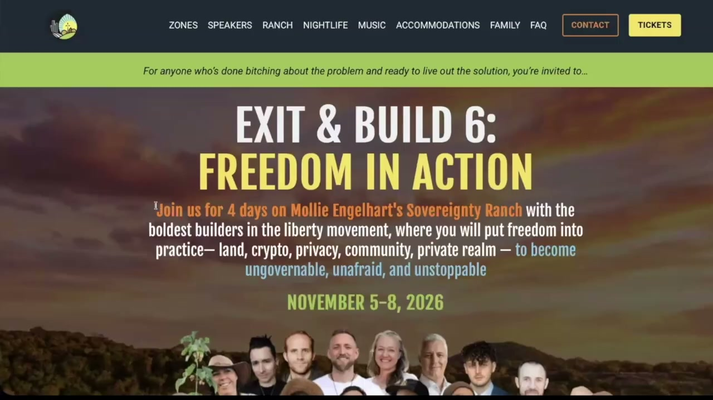
Slide 4 [49:11]: Exit &
Build 6: "Freedom in Action," 5–8 November 2026, Mollie Engelhart's
Sovereignty Ranch, Bandera, Texas.
- Exit & Build 6 is a four-day in-person event,
featuring leaders such as Curtis Stone, Alec Zeck, John Bush, Mollie
Engelhart, River and Imani, Doug and Stacy Colbert, and Sacred Honor
Educational Fellowship. He says it has "implementation zones" where
attendees leave with a working crypto wallet, private phone setup,
soil/chicken plans and similar.
- "Consent. It's all about consent." As long as
people consent to the political system, "the system will continue to be
what it is." John Bush, the event's founder, "used to be a big political
activist" and concluded politics "keeps getting worse even if your guy
makes it into office."
- The counter-economy. "We trade outside of the
system individually in the private… in whatever currency we choose"
(crypto, decentralised internet, "Quartal" node, regenerative soil,
community). "The old system is coming down. Why do you think they're
getting louder every single day? So you stay distracted and you don't
build the new earth."
- "We can peacefully move out… we don't need a bloody revolution." He
calls the war narrative ("if you want change you need war") itself a
mind-control idea.
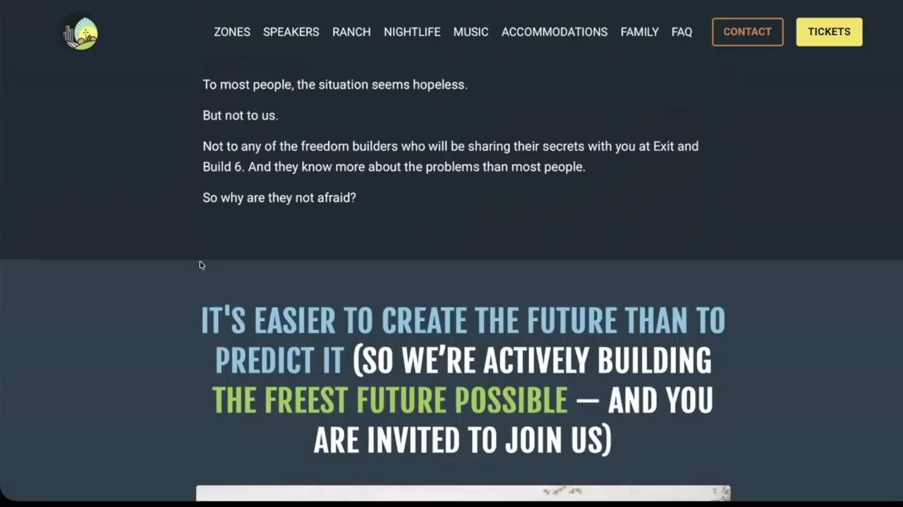
Slide 5 [50:06]: "It's easier to create the future than to predict
it."
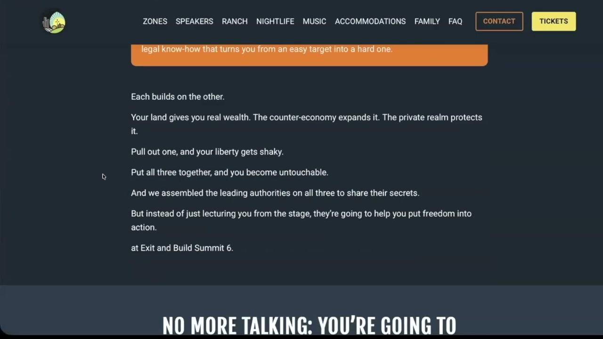
Slide 6 [50:54]: The
three pillars as the site frames them: land, counter-economy, private
realm ("Each builds on the other").
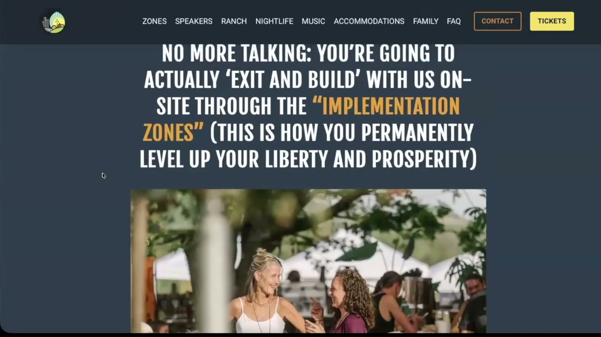
Slide 7 [51:00]: "No more talking: you're going to actually 'exit
and build' with us on-site through the implementation zones."
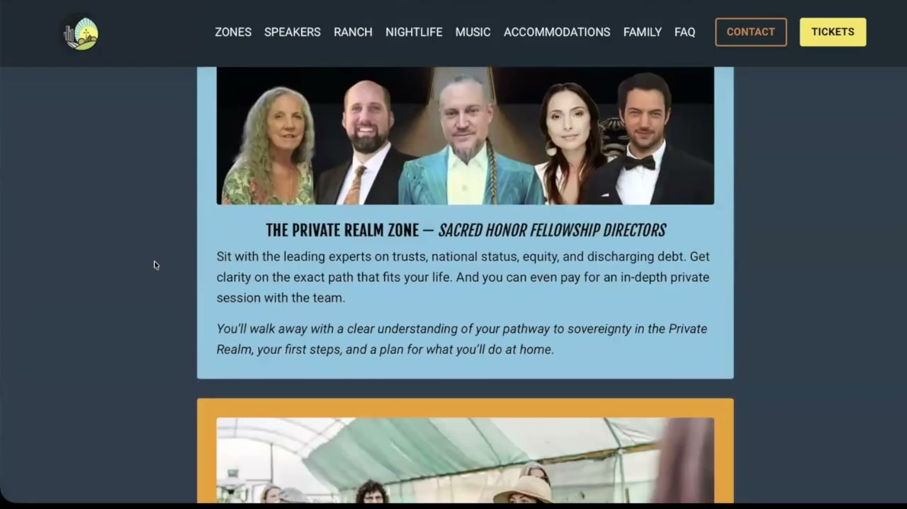
Slide 8 [51:20]: "The Private Realm Zone," led by Sacred Honor
Fellowship directors (trusts, national status, equity, discharging
debt).
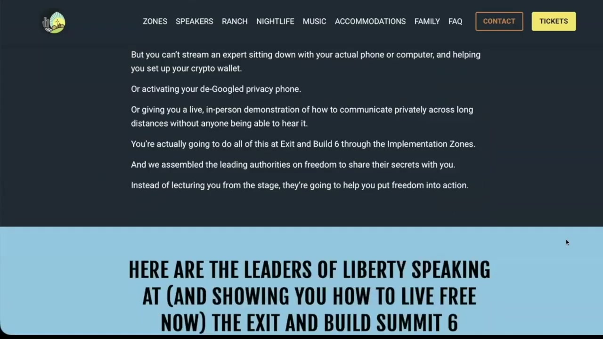
Slide 9 [51:54]: "Here are the
leaders of liberty speaking at (and showing you how to live free now)
the Exit and Build Summit 6."
7. Griess's four
strategic pathways [55:53–1:00:38]
| Pathway |
Premise |
Griess's comment |
| Stay and fix |
The system is redeemable. Do the ordinary organising and change it
from within. |
Clayton's position. |
| Exit and build |
The system is irredeemable. Build parallel institutions. |
Mentz's position. |
| Withdraw consent / opt out |
Don't comply (licence, tax, mask, vaccine) "as much as you can," and
critical mass of non-consent will collapse the system. |
Mentz: "not likely… do you really want to bet on that?", comparable
to "sit back, relax, watch the show and eat some popcorn." |
| Hold power accountable |
Investigate, expose, enforce limits. At the extreme, "build the
guillotines." |
Griess notes this is "exaggerated perhaps." |
There is also a fifth category, which is just going along (the
majority). Griess says each rests on a different judgment about "what is
possible." He has organised people since 2020 and found all four are
held sincerely. He identifies as "not an exit and build person… if
somebody wants to exit and build, and then I'll join after it's
built."
His main objection to exit-and-build communities is that they
"overlook governance to their own detriment." The
event's website covers "farming, food security, water security, ammo…
but there's no governance."
8. Griess's "Juries"
excerpt [1:01:00–1:11:00]
Griess plays a segment of his own special presentation, Juries:
The Missing Foundation of Self-Government (full version on
Commoner's channels).
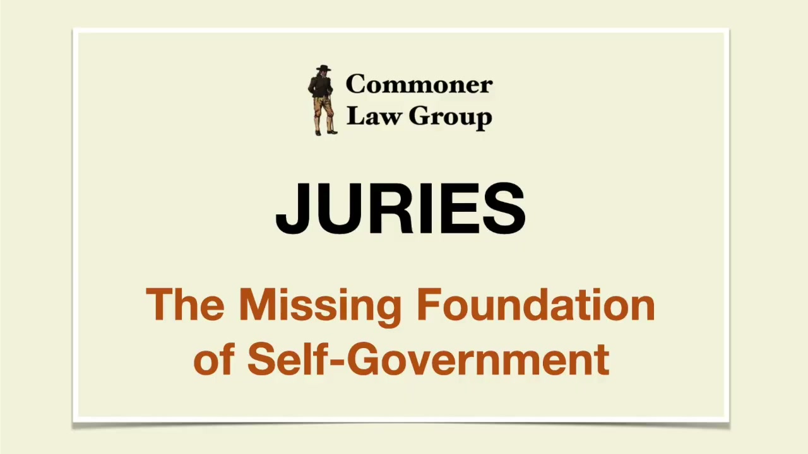
Slide 10 [1:01:29]: "Juries: The Missing Foundation of
Self-Government."
- Background: he has organised for years
(water-fluoridation campaign, a congressional campaign, medical-freedom
packages under the mandates) and kept seeing groups fall apart through
"interpersonal matters," above all people's inability to deal
with accusations. "Trust is lost. And it is the nature of trust
that once offended, once broken, it's very hard to restore."
- The jury principle as a path from conflict to
truth:
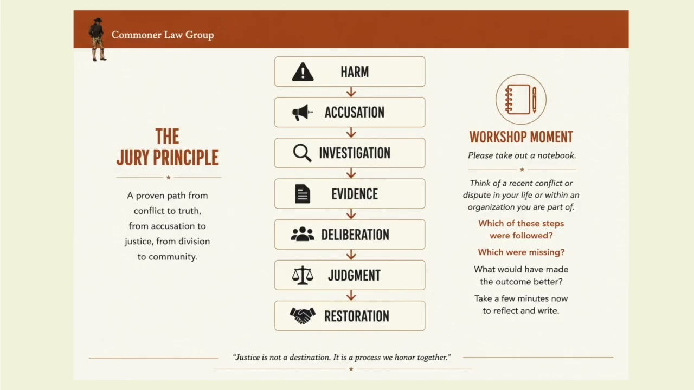
Slide 11 [1:04:26]: Harm → Accusation → Investigation → Evidence →
Deliberation → Judgment → Restoration, with a "workshop moment" asking
the audience to think of a recent conflict and which steps were
missing.
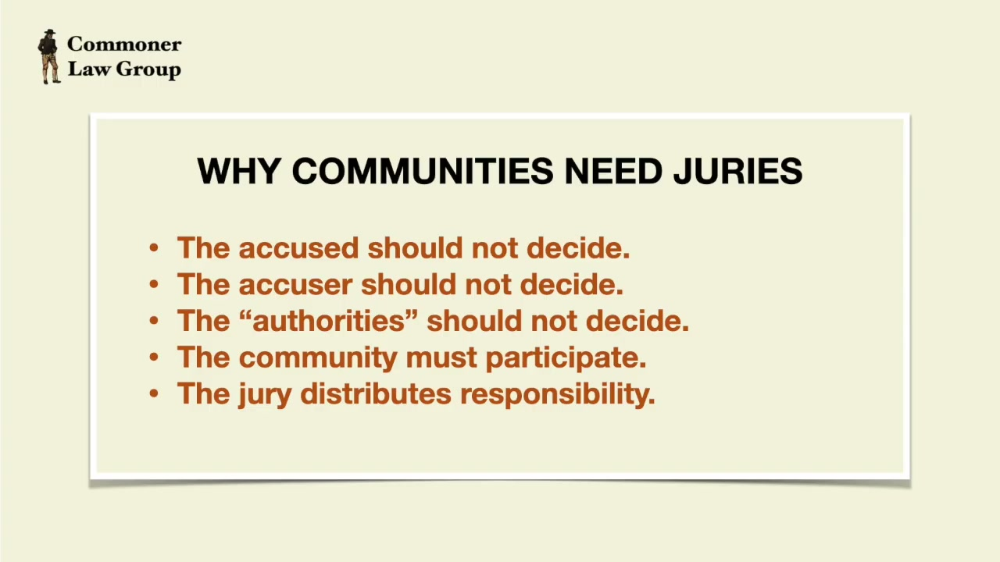
Slide 12 [1:04:58]: Why
communities need juries: the accused should not decide; the accuser
should not decide; the "authorities" should not decide; the community
must participate; the jury distributes responsibility.
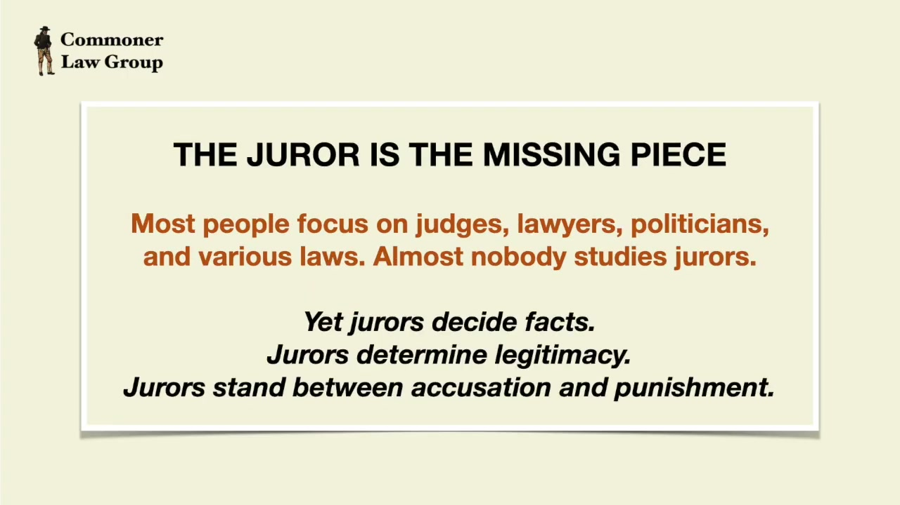
Slide 13 [1:05:42]: "The
juror is the missing piece": jurors decide facts, determine legitimacy,
and stand between accusation and punishment.
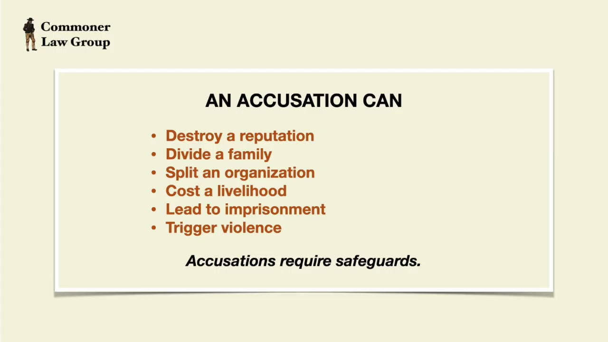
Slide 14 [1:05:57]: An accusation can destroy a reputation, divide a
family, split an organisation, cost a livelihood, lead to imprisonment,
trigger violence. "Accusations require safeguards."
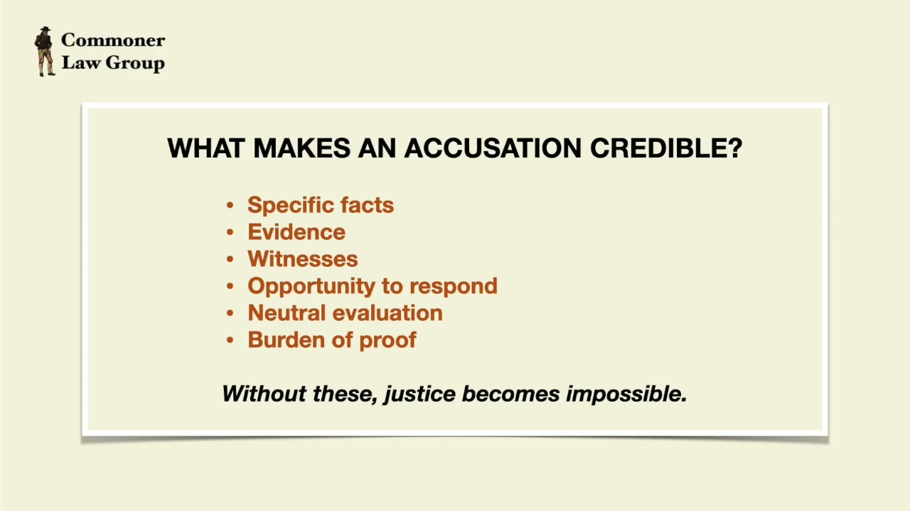
Slide 15 [1:06:21]: A
credible accusation has specific facts, evidence, witnesses, opportunity
to respond, neutral evaluation, burden of proof.
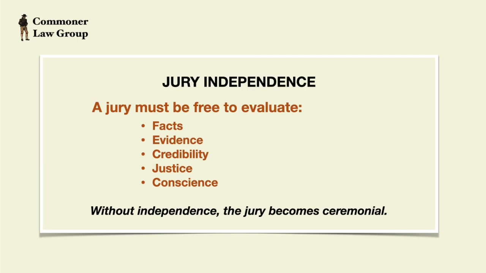
Slide 16 [1:07:07]: Jury independence: facts, evidence, credibility,
justice, conscience. "Without independence, the jury becomes
ceremonial."
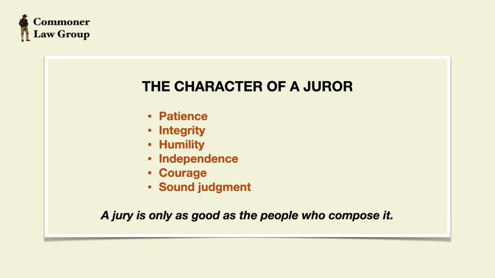
Slide 17 [1:07:34]: Patience,
integrity, humility, independence, courage, sound judgment. "A jury is
only as good as the people who compose it."
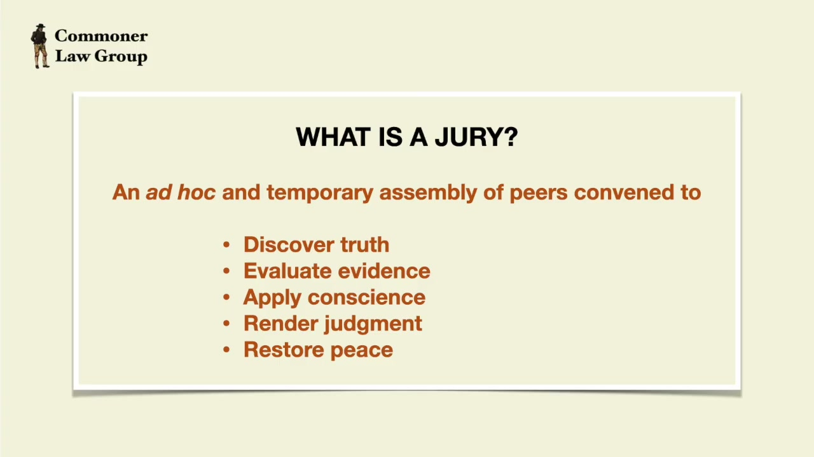
Slide 18 [1:08:10]: "An ad hoc and temporary assembly of peers
convened to discover truth, evaluate evidence, apply conscience, render
judgment, restore peace."
- A group "could have an autocratic structure" (he cites the Waco
compound under David Koresh) if "by consent of the people," but "in a
self-governing society… you want to distribute the decision-making in a
jury."
- The accuser must "fully accept that it's his or her burden
of proof," which "eliminates a lot of accusations."
- His challenge: "the day that an exit and build organization leads
with something like governance and puts the jury square in the middle…
that's when I'll jump on."
Mentz's response [1:08:00–1:11:30]. "A fantastic
lens," and "governance comes before all the other things." He notes
successful intentional communities, for instance one founded in 1968
that decides by consensus of all members ("some of the
decisions they take years"), and says different models suit different
people.
9. Audience contributions
[1:11:30–1:41:00]
Sarah (upstate New York) [1:12:00–1:20:00].
- A Sacred Honor national-status course member who "changed [her]
status three times." She recaps the 14th
Amendment/federal-citizenship argument ("slaves to the corporation…
started in 1871"; "28 USC 3002")
and says local and state governments "are all their own corporations…
you can find them on Dun & Bradstreet."
- Mentz thanks her for the recap and says the status process currently
applies to Americans, but "there has to be a way for us to do status
correction in other [Western] countries" and they are "looking for
volunteers" in Canada. He observes that the exit-and-build community
took "years" to accept lawful remedies: they were "buying land in the
country somewhere but they were still U.S. citizens still paying income
tax and property tax… so how free are you really?" People "who don't
want to look at the law stuff" must face it: "it is part of
self-governance."
- Griess adds that exit-and-build does not require relocating: one can
"construct this security fence around your private world right where you
are."
Audrey (retired military; former trucking business owner)
[1:21:35–1:33:00]. Asks beginner questions after four years of
learning:
- She sent state-assembly "status" paperwork and received IRS letters.
She wonders whether status papers were "an affront" and notes the IRS
still treats her as a citizen.
- Notice of liability. Mentz says that is "not
something we directly do inside the fellowship," but that allies at In
Power Movement (Cal Washington, inpowermovement.org) do it and "we know
for a fact that it works." He distinguishes it from equity, "equity is
more of a defense, the notice of liability is more of an offense," and
says it requires no status correction. He mentions a "bloodline royalty"
stepping down after notices, which he does not detail.
- Is a parallel system like Sharia law? Mentz: "not
technically," because Sharia as a government system "is imposed upon the
whole land," while each self-governing community here has its own model
and trades with others "for mutual aid and benefit." He names the
overarching term agorism: "a true free market without
any kind of centralized oversight."
Tamara [1:33:00–1:42:30].
- Corrects military status with DD Form 2168 (she
says it exits "forever" military obligations).
- Asks whether the fellowship has coordinated with the other status
groups ("status correction palooza"), noting the commercial incentives
and the confusion. Mentz says he has not reached out to
American State National or American National groups. He says people who
have come from them to the Fellowship "with severe problems" and that
"all I've seen… is just more trouble than actual remedy." The
Fellowship's citizenship evidence affidavit has been
used since 2007, is "strong enough… on every level of government from
the federal to military to state, county, city," and "opts you out of
income tax without many issues, even state income tax."
- She describes turning six credit-card accounts into trusts and says
all are "in default," which she expects to be tested in court.
- On infiltrating local government: Mentz says infiltration will not
work ("how easily they manipulate and basically blackmail people") and
recommends Daniel Mercury, a former California
candidate. He does say "we've gotten sheriffs on board…
that's how we can flip a county," and that several counties "have
flipped basically into common law." He adds that some officials may be
"MK Ultra"-captured without knowing it.
10. Close [1:42:35–1:43:42]
Griess thanks everyone "for hanging out on your Independence Day" and
defines commoners: "no one's royalty, but we're not also slaves… The
American law is established of, for, and by common people like you and
me."
11. Claims worth
checking before reliance
These are observations for a public reader, not rebuttals.
- "Original 13th
Amendment" (Titles of Nobility Amendment). The 1810
proposed amendment would have stripped citizenship from those accepting
foreign titles. It is widely held not to have been ratified,
and nothing in its text refers to attorneys. The claim in the talk
(properly ratified, bars lawyers from office) is contested and should be
checked against primary sources.
- Etymology of "government." Gubernare ("to
steer, to govern") comes from Greek kybernan, and
-ment is a noun suffix (from Latin -mentum, "result
of"), not mens ("mind"). The "mind control" derivation is a
popular claim, not the standard etymology.
- Legal statements by the host and guests (D.C.
incorporated in 1871, "28 USC 3002,"
the 14th
Amendment as federal-citizenship "slavery," local governments as
corporations on Dun & Bradstreet) are repeated from interview 01.
See the closing "Claims worth checking" section of that summary for
notes. For example, § 3002's
definitions apply "as used in this chapter."
- DD Form 2168. A guest says this form "corrects your
status with the military" and exits the "forever" obligation. The
Department of Defense forms index (esd.whs.mil) lists DD 2168 as
"Application for Discharge of Member or Survivor of Member of Group
Certified to Have Performed Active Duty with the Armed Forces of the
U.S." (a form for certain civilian groups), not a general
status-correction or separation form. Confirm what the form is for
before relying on it.
- Hummel's book. Clayton's wording for the title is
approximate. The author's book is generally cited as Emancipating
Slaves, Enslaving Free Men.
- Voting machines and third parties. Mentz's claim
that a third party "is never going to materialize" is an opinion about
election integrity that the call does not support with evidence. The
NDAA, Palantir and "IDF" statements by Clayton are also assertions
without sources on the call.
- Outcome claims. Counties "flipped into common law,"
sheriffs on board, notices of liability producing resignations, and the
status affidavit stopping state income tax "without many issues" are
anecdotal and uncited.
- Promotion. Exit & Build 6 (5–8 November 2026,
Texas), the Fellowship's courses and Griess's other programs are
mentioned throughout. The video description links to the paid National
Status & Passport course page, and Mentz appears as a featured guest
of the event.